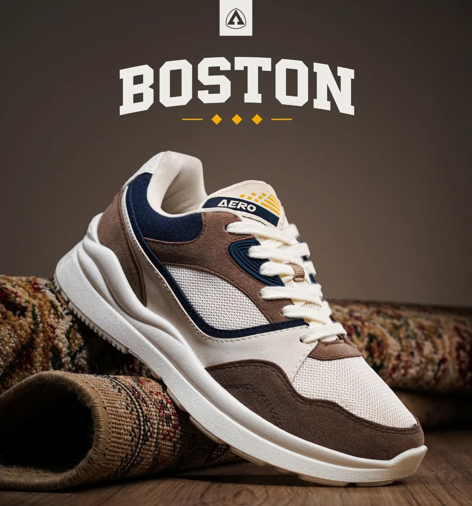

Boston Aero Street
Air Max Essential
Sepatu Aerostreet adalah sepatu yang dirancang dengan fokus pada kenyamanan dan kualitas. Sepatu ini memiliki desain yang modern dan stylish, dengan tampilan yang elegan dan menawan. Sepatu Aerostreet dibuat dari bahan berkualitas tinggi yang tahan lama dan nyaman dipakai.
Rp.1.899.000Rp.2.299.000
Pilih Ukuran (US)
8 9 10 11 12